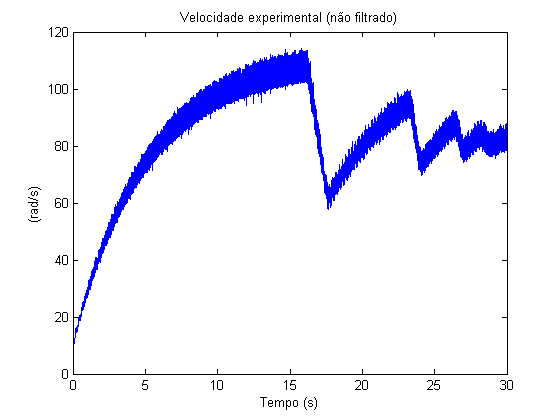
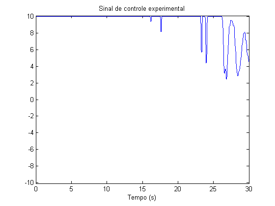
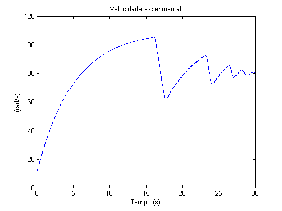
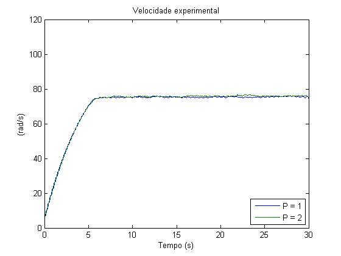
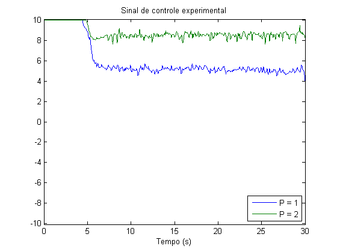
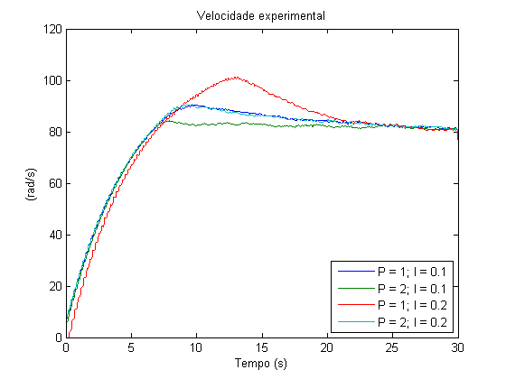
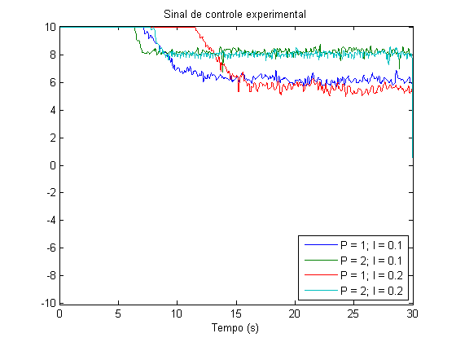

Contents
clear all;
filter = @(v)smooth(medfilt1(smooth(v(1:3000), 5), 17), 5);
t = (0:10e-3:30-10e-3)';
P = 1.1; I = 11.6
v = load('dados_coletados\velocidade_1.1_11.6.lvm'); c = load('dados_coletados\controle_1.1_11.6.lvm'); v = v(1:3000); c = c(1:3000); plot(t, v); title('Velocidade experimental (não filtrado)'); xlabel('Tempo (s)'); ylabel('(rad/s)'); snapnow; plot(t, filter(c)); title('Sinal de controle experimental'); xlabel('Tempo (s)'); ylim([-10.1, 10.1]); snapnow; plot(t, filter(v)); title('Velocidade experimental'); xlabel('Tempo (s)'); ylabel('(rad/s)'); stepinfo(v, t, 80, 'SettlingTimeThreshold', 0.1)


ans =
RiseTime: 4.2645
SettlingTime: 28.4402
SettlingMin: 57.5540
SettlingMax: 114.1026
Overshoot: 42.6283
Undershoot: 0
Peak: 114.1026
PeakTime: 15.8100

Proporcional
v1 = filter(load('dados_coletados\velocidade_1_0.lvm')); v2 = filter(load('dados_coletados\velocidade_2_0.lvm')); c1 = filter(load('dados_coletados\controle_1_0.lvm')); c2 = filter(load('dados_coletados\controle_2_0.lvm')); plot(t, [v1, v2]); title('Velocidade experimental'); xlabel('Tempo (s)'); ylabel('(rad/s)'); ylim([0, 120]); legend('P = 1', 'P = 2', 'Location', 'SouthEast'); snapnow; plot(t, [c1, c2]); title('Sinal de controle experimental'); xlabel('Tempo (s)'); legend('P = 1', 'P = 2', 'Location', 'SouthEast'); ylim([-10.1, 10.1]); snapnow;


Erro estático
err1 = 100*(80-median(v1))/80 err2 = 100*(80-median(v2))/80
err1 =
5.9784
err2 =
5.3752
Proporcional integrativo
v1_1 = filter(load('dados_coletados\velocidade_1_0.1.lvm')); v2_1 = filter(load('dados_coletados\velocidade_2_0.1.lvm')); v1_2 = filter(load('dados_coletados\velocidade_1_0.2.lvm')); v2_2 = filter(load('dados_coletados\velocidade_2_0.2.lvm')); c1_1 = filter(load('dados_coletados\controle_1_0.1.lvm')); c2_1 = filter(load('dados_coletados\controle_2_0.1.lvm')); c1_2 = filter(load('dados_coletados\controle_1_0.2.lvm')); c2_2 = filter(load('dados_coletados\controle_2_0.2.lvm')); plot(t, [v1_1, v2_1, v1_2, v2_2]); title('Velocidade experimental'); xlabel('Tempo (s)'); ylabel('(rad/s)'); ylim([0, 120]); legend('P = 1; I = 0.1', 'P = 2; I = 0.1', 'P = 1; I = 0.2', 'P = 2; I = 0.2', 'Location', 'SouthEast'); snapnow; plot(t, [c1_1, c2_1, c1_2, c2_2]); title('Sinal de controle experimental'); xlabel('Tempo (s)'); legend('P = 1; I = 0.1', 'P = 2; I = 0.1', 'P = 1; I = 0.2', 'P = 2; I = 0.2', 'Location', 'SouthEast'); ylim([-10.1, 10.1]); snapnow; stepinfo(v2_1, t, 80, 'SettlingTimeThreshold', 0.1)


ans =
RiseTime: 5.1333
SettlingTime: 5.3391
SettlingMin: 72.0103
SettlingMax: 84.2852
Overshoot: 5.3565
Undershoot: 0
Peak: 84.2852
PeakTime: 7.9000